Oscilla Brand & UI System
The single HTML source of truth for Oscilla's brand identity, Observatory v2 visual
contract, compiled ST7789 external & Cardputer deck renders, and interactive
dual-display simulator. Synced directly from C++ via tools/render_external_views.py --sync-guide-assets.
firmware-cardputer/src/ui/; sample observations are synthetic. Each preview
repaints the full Canvas, so it previews clean screen states rather than the SPI row
cache or panel timing. The display font is approximated in Canvas, so glyph shapes and
exact text widths can differ from M5GFX. Compare important changes on the real panels.
Brand & Observatory v2 source of truth
Techno-futuristic mystic observatory with real lab discipline.
Lens Core is the only mark (green hex + orthogonal orbits, cream lens, yellow focal core; Signal Pink never enters the logo). Hierarchy is strictly 1. Truth → 2. Action → 3. Context → 4. Atmosphere. Every pixel on both displays uses solid 16-bit RGB565 colors from firmware-cardputer/src/ui/theme.h with zero alpha, gradients, or fabricated telemetry.
1-Bit Flash Typography
observatory_fonts.h stores pre-rasterized Chakra Petch Bold (12 / 16 / 20 px) and IBM Plex Mono Medium (11 px) in 7.4 KB flash (0 B RAM). Built-in 5×7 glcdfont is strictly 1× micro-ticks only—zero 2×/3× scaling anywhere.
Observatory v2 Chrome
External ST7789 uses observatory_chrome.h: 9×9 mode sigil, chamfered truth pill, octagonal aperture on Void Ink, and static #151018 Reading Dock. Cardputer 240×135 pairs a #151018 Chakra Petch top bar, 4 recessed status LEDs, far-right battery, and bordered truth-pill footer.
Truthful Sacred Geometry
Lens Core hex frames, astrolabe RSSI rings (with -40/-65/-95 anchored on their true inner-to-outer rings), HDOP precision tiers, RSSI-height LoRa pulses, and real dynamic Drive scale bars orient actual measurements—never wallpaper or invented data.
Interactive simulator
Both renderers follow the selected deck screen. Choose one of the source states, then use the matching device keys or click the controls. Fixture data is local and synthetic.
Card and fixture
Synthetic live fixture · no device data is loaded.
Keyboard contract
Chrome anatomy
Every card shares the same header, body, and footer — drawn by
ui/chrome.cpp, never duplicated per-view. Body content owns rows
y = 20 → 121; a card is not supposed to draw outside that band.
Header — 0 to 19px
chrome.cpp · beginChrome()| Title | (2,5), clipped to 16 chars |
| Status dots | B 146 · G 159 · S 172 · R 185, r=3, y=9 |
| DBG badge | (112,5), yellow, debug builds only |
| Battery % | cursor (194,5), right-padded 3 chars |
| Battery glyph | outline (218,4,16,10) + tip (234,7,2,4) |
| Divider | hline y=19, Dim Green |
Footer — 121 to 135px
chrome.cpp · endChrome()| Divider | hline y=121, Line Border |
| Text origin | cursor (3,124) |
| Notice mode | yellow, clipped 38 chars — overrides transport |
| Transport mode | LIVE (green) / CACHED (pink) / IDLE (slate) + muted transport string, clipped 30 |
Screen gallery
All eleven home cards plus the two context screens (AP Detail, Settings) and the Help overlay, each rendered from the same drawing code as the simulator above, with one representative populated state. Boot screen included for completeness.
Compiled Deck Renders (Cardputer ADV · 240 × 135) Observatory v2
Pixel-exact host renders compiled directly from firmware-cardputer/src/ui/ via tools/render_external_views.py --sync-guide-assets. Every deck screen shares the #151018 Chakra Petch header bar, 4 unlabelled status LEDs (B/G/S/R), terminal far-right battery, and bordered truth-pill footer.
AP Radio Dossier
240×135 C++Chakra Petch top bar + #151018 SSID identity band + LIVE pill footer.
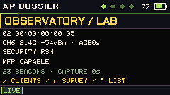
Sniffer Clients
240×135 C++4-row rail-selected client table with fixed channel/band/RSSI columns and LAST ticker.
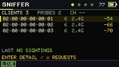
BLE Advertiser Dossier
240×135 C++Observed advertiser metadata with tracker-aware rail and real sample count.
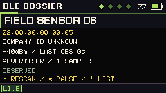
Client Detail
240×135 C++Full client MAC in Chakra Petch Title + observed AP link metadata.
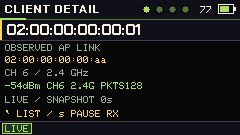
Archive Sessions
240×135 C++Read-only offline SD recording catalog.
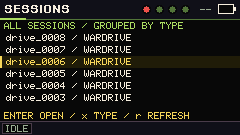
Archive Summary
240×135 C++Validated record count, time span, and partial-tail status.
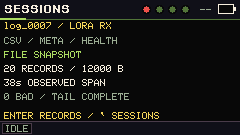
Keyboard contract
From ui/help_view.cpp (the deck's own h overlay) plus the
context-specific bindings each view's footer advertises.
| Key | Global meaning | Context-specific |
|---|---|---|
| , / | Move between the 11 home cards | — |
| ; . | Move / scroll rows in the current list | Settings: brighter / dimmer |
| ⏎ | Select / act | Wi-Fi Scan row → opens AP Detail; AP Detail → start beacon capture |
| ` | Back / stop active work | On Link → opens Settings; Settings → back to Link |
| s | Start / stop | Toggles watching on Deauth, Anti-Surv, LoRa RX, BLE Scan, 802.15.4 |
| c | Stream / configure | LoRa RX: applies the profile currently selected with x — works any time, not just before the first config |
| x | Cycle / switch tab | Sniffer: Clients ⇄ Probes · 802.15.4: PANs ⇄ Nodes · LoRa RX: cycles the profile c will apply next (shown as x=<LABEL> once it differs from the applied config) |
| m | Add a Drive marker | Wardrive card only |
| h | Toggle keyboard help | Overlays any card; drawn with title "HELP" |
Palette & layout constants
RGB565 values from ui/theme.h, shown here as their nearest 24-bit
equivalent of the deck's RGB565 constants. The external spectrum plot and neutral
panel surfaces use their own RGB565 colors from the companion view modules.
| Constant | Value (px) |
|---|---|
| Header height | 20 |
| Body top / height | 20 / 101 |
| Footer top / height | 121 / 14 |
| List row height / visible rows | 13 / 4 (the "four-row budget") |
| Screen resolution | 240 × 135 |
External ST7789 Display (320 × 240) Observatory v2 · compiled C++ renders
Every panel below is rendered 1:1 from the compiled ST7789 companion firmware (firmware-cardputer/src/ui/external_*.cpp) using solid RGB565 tokens from theme.h, shared observatory_chrome.h framing, and 40 px tile-diffing over shared SPI2. No duplicated deck chrome, status dots, battery, or keyboard hints appear on the external panel.
Observe / AP Constellation
LIVEHex-framed RSSI astrolabe with meridian-anchored dBm rings (-40 inner to -95 outer), Signal Pink target-lock leader, and Selected AP dossier card.
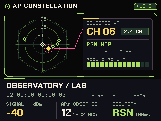
Analyze / Packet Scope // 1S
LIVE30s measured 1s window scope with solid vertical drop-stems, dashed Signal Pink peak-hold line, and visibly unbridged missing windows.
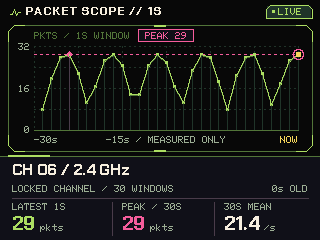
Analyze / Channel Field // Dwell
LIVEIndexed dwell-count barfield with stepped phosphor segments, Signal Pink selection frame, and Reading Dock peak/mean summary.
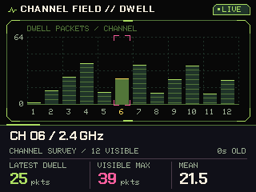
Observe / LoRa Pulse Cadence
LIVERF pulse oscilloscope (height = RSSI, cap = byte length) with Signal Pink selected callout, RSSI meter, and zero-centered SNR gauge.
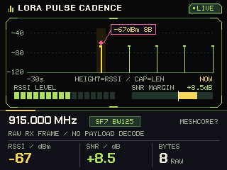
Drive / Breadcrumb // N-Up
FIXCrosshair survey grid, Signal Pink north-up compass rose, Start [S] vs. Live Head lock, and dynamic scale bar from trail meters/pixel.
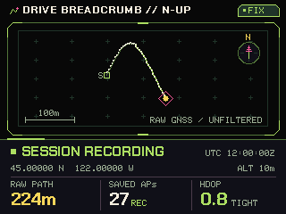
Drive / GNSS Fix Reticle
FIXHDOP precision-tier astrolabe (<1.5 / <3.0 / <6.0) with UTC clock, NMEA UART status, altitude, and 3s freshness bar. Zero fake satellites.
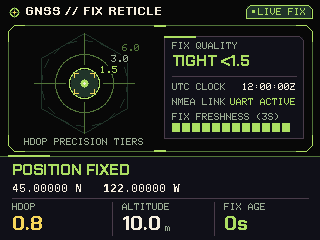
Observe / BLE Constellation
LIVEPassive BLE advertiser astrolabe with Company ID dossier card, Signal Pink tracker flag, and explicit no-bearing notice.
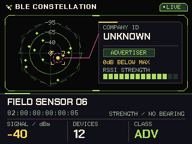
Analyze / AP & Client Cluster
LIVEAP/request-centred RSSI cluster with observed client filaments radiating by probe-measured RSSI and drawn/total link counts.
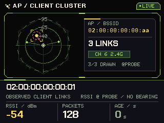
Observe / 802.15.4 PAN Field
LIVEMulti-PAN / multi-node passive MAC inventory plotted as a 0-255 LQI column field with explicit no-topology notice.
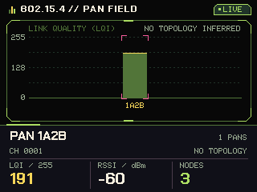
Analyze / Management Events
LIVEPassive deauth/disassoc counts grouped by observed channel with Signal Pink focus bar and MAC/reason dock.
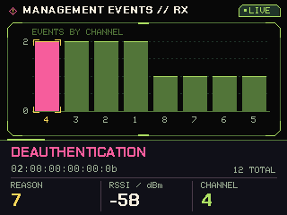
System / Heap Free % Monitor
READY60s auto-scaled Deck (green) and Probe (pink, slate when stale) free-heap traces paired with live PHY, LoRa, GNSS, and SD log state.
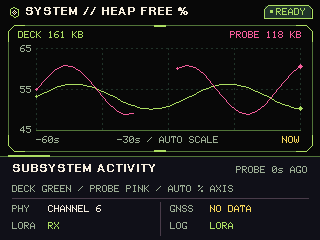
Logs / Saved Session Summary
ARCHIVERead-only SD snapshot plotting the last 32 valid record RSSI values, observed time span, valid/bad row card, and sidecar flags.
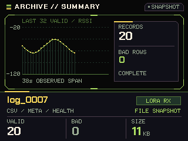
python3 tools/render_external_views.py --sync-guide-assets to refresh all compiled PNGs after any UI change.